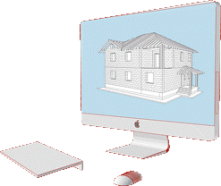
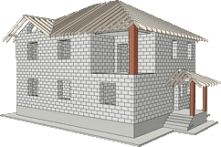
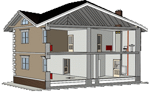
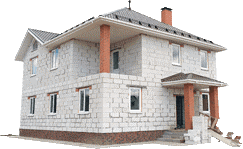

Этапы строительства частных домов "под ключ"
С чего начать?
• Строительство дома под ключ можно разделить на основные этапы, вне зависимости, собираетесь Вы построить дом из бруса или газобетона. Все этапы строительства являются ответственной задачей и неотъемлемо связаны между собой, поэтому еще до начала строительства загородного дома под ключ, необходимо их тщательно продумать.
1. Проектирование загородного дома "под ключ"
• Проектирование дома начинается с получением от заказчика технического задания, в котором мы видим все входные данные: размеры дома, участка, этажность, материалы для строительства, геологию и геодезию участка, архитектурный стиль и прочее. Если конструктивные решения стен кровли и перекрытий могут быть типовыми, то проектирование фундамента всегда связана с геологической основой. Для проектирования в Раменском районе и Московской области мы имеем полную геологическую карту, таким образом, проектирование не вызывает затруднений.
• Эскизный проект дома, необходимый для получения разрешения строительства, представляет собой набор чертежей, состоящий из планов, фасадов, разрезов и привязки к участку. Мы бесплатно предоставляем такой проект для заказчика.
• Рабочий проект дома — это "инструкция" для строителей, в которой подробно описаны все узлы, детали, материалы и конструктивные решения. Именно строительный проект дома определяет технико-экономический показатель строительства, простыми словами, стоимость квадратного метра жилья и изменяется он от объема материалов, их стоимости и сложности конструктивных решений.
• Все разделы проекта должны быть строго увязаны между собой, только это сможет гарантировать качественный результат, поэтому на этом этапе желательно сделать проект инженерных систем.
2. Строительство "коробки" дома
• Строительство коробки дома — это возведение всех несущих конструкций: строительство фундамента, строительство несущих наружных и внутренних стен, перекрытий, устройство стропильной системы и кровли (строительство крыши частного дома). Другими словами, это силовой каркас дома, поэтому ошибки допущенные при строительстве коробки самые опасные и дорогостоящие, независимо от строительства коробки дома из бруса или пеноблока.
• При строительстве коробки нужно обязательно уделять внимание особенностям материалов. Например, при строительстве из газобетона нужно уделить особое внимание армопоясу, а при строительстве дома из бруса или бревна нельзя забывать про усадку материала.
• На этапе строительства коробки важно определить места вводов/выводов и монтажа инженерных систем, чтобы оставить закладные детали и отверстия для монтажа.
3. Монтаж инженерных коммуникаций
• Комфортный загородный дом подразумевает наличие инженерных систем в доме: водоснабжение и водоотведение (канализация), отопление и электроснабжение, вентиляция и кондиционирование.
• Наиболее важным вопросом у людей, собирающихся построить дом, является стоимость отопления загородного дома. Стоимость напрямую зависит от технических условий. Если есть возможность подключения к магистральному газу, то это лучший вариант, но при современных темпах развития возможны альтернативные способы отопления — это автономные системы.
• Автономные инженерные системы делают вас полностью независимыми от технических условий на участке. Мы можем предложить монтаж автономных канализаций (септиков), водоснабжения (скважины с необходимым оборудованием), автономного отопления. Автономное отопление может работать на различном топливе: твердом, жидком и газе.
4. Отделка дома "под ключ"
• Отделка дома придает дому и его хозяину индивидуальность. Вариаций бесконечно много, поэтому отделка не может быть типовой и напрямую зависит от пожеланий и возможностей заказчика.
• Наружная отделка дома из блоков или кирпича — это в первую очередь отделка фасада. На сегодняшний день два основных вида — это вентилируемые фасады и "мокрые фасады".
• Вентилируемый или вентфасад — это панели с уже готовой фактурой и цветом, которые крепятся на стены дома по предварительно установленному металлическому или деревянному каркасу. В воздушную полость между панелями и стеной можно вложить утеплитель для большей теплоизоляции. Материал вентфасадов различен. Мы рекомендуем использовать вентилируемые фасады для отделки стен из газобетона или пеноблока, такая отделка обеспечит долговечность фасада и высокую теплоизоляцию.
• Внутренняя отделка дома, как правило, связана с "мокрыми" процессами: стяжка, штукатурка, шпаклевка, окраска, укладка плитки и пр., поэтому работы необходимо проводить при плюсовых температурах.
5. Строительство дома "под ключ" окончено
• Для того чтобы мечта о собственном загородном доме воплотилась в реальность и принесла только положительные эмоции, важно доверить работу на всех этапах профессионалам.
• Все вышеописанные этапы строительства дома неразрывно связаны между собой и лучше доверить работу в одни руки, во избежание неувязок и переделок.